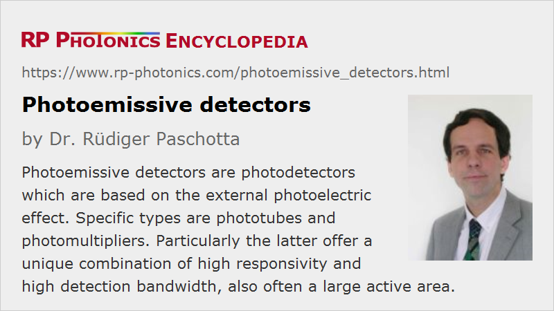

Photoemissive Detectors
Definition: photodetectors which are based on the external photoelectric effect
Alternative term: photoelectric detectors
More general term: photodetectors
More specific terms: phototubes, photomultipliers
Opposite terms: photoconductive detectors
German: photoelektrische Detektoren
Categories: photonic devices, light detection and characterization
How to cite the article; suggest additional literature
Author: Dr. Rüdiger Paschotta
Photoemissive detectors (also called photoelectric detectors) are photodetectors which are based on the external photoelectric effect. Such a device contains some kind of photocathode, where incident light is partially absorbed and generates photoelectrons, i.e., electrons which are released into free space. Using another electrode, called the anode, which is held at a substantially more positive electric potential, one can pull the photoelectrons away from the photocathode and obtain a photocurrent. This is the operation principle of a phototube.
Some kinds of photoemissive detectors, called photomultipliers, also employ a mechanism for strong amplification of the photocurrent, based on the generation of secondary electrons upon impact on a material.
Some photoemissive detectors can not only register optical powers, but can produce images. In particular, there are image intensifiers, e.g. with multichannel plate detectors, which are used for night vision devices.
Common Features of Photoemissive Detectors
Although photoemissive detectors differ in various details, they typically have some common features:
- Due to the use of electrons, they usually need to be operated in a high vacuum. (For some phototubes, a gas-filled tube is used.) The detected light, when coming through air, must therefore always first pass an optical window, which sometimes limits the spectral response. (In rare cases, photoemissive detectors work together with other devices in a joint high vacuum, so that an optical window is not required.)
- Apart from the influence of the optical window, their spectral response is determined by the electrical and optical properties of their photocathode, which are available mostly for the ultraviolet, visible and near infrared spectral region.
- Their quantum efficiency is normally substantially lower than what can be achieved with photodiodes at least in certain spectral regions – often well below 50%. This is a substantial disadvantage over photodiodes for the detection of very faint light, e.g. in photon counting. The loss of some of the photons means excess noise.
- On the other hand, detectors without current multiplication produce little additional noise (excess noise). Those with current multiplication have additional noise from the amplification, but have a very high responsivity; this makes it much simpler to avoid substantial influences of electronic noise from the following electronic amplifier.
- The detection bandwidth of photoemissive detectors is often very high – e.g. in the megahertz or even gigahertz region.
- The required operation voltages are in general substantially higher than for photodetectors based on the internal photoelectric effect, such as photodiodes. Phototubes may be operated with voltages of the order of 100 V, but photomultipliers typically require substantially more, e.g. 1 kV.
- The active area can be made relatively large, often without a substantial penalty concerning the detection bandwidth.
- Some detectors allow for fast gating, i.e., for fast switching of the sensitivity. For example, there are imaging detectors which can be made sensitive only for a very short time interval, e.g. for taking images at variable times after a certain event. If they also apply strong photoelectron multiplication, the sensitivity can be high enough even for very short exposure times.
In the early times of photonics, photoemissive detectors were without substantial competition from semiconductor photodetectors, for example. Later on, semiconductor-based detectors have largely replaced photoemissive detectors, because they can be much more compact, do not need a high vacuum and can be operated with much lower voltages. However, particularly the unique combination of very high responsivity and a high detection bandwidth lets photoemissive detectors still be the only choice for certain applications. The potential for a large activity area can also be an important factor.
Questions and Comments from Users
Here you can submit questions and comments. As far as they get accepted by the author, they will appear above this paragraph together with the author’s answer. The author will decide on acceptance based on certain criteria. Essentially, the issue must be of sufficiently broad interest.
Please do not enter personal data here; we would otherwise delete it soon. (See also our privacy declaration.) If you wish to receive personal feedback or consultancy from the author, please contact him e.g. via e-mail.
By submitting the information, you give your consent to the potential publication of your inputs on our website according to our rules. (If you later retract your consent, we will delete those inputs.) As your inputs are first reviewed by the author, they may be published with some delay.
See also: photodetectors, photoelectric effect, photocathodes, phototubes, photomultipliers, infrared viewers, streak cameras
and other articles in the categories photonic devices, light detection and characterization
|  |
If you like this page, please share the link with your friends and colleagues, e.g. via social media:
These sharing buttons are implemented in a privacy-friendly way!